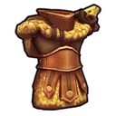

Novelo Dourado
Armadura leve · Tier 7 · Nível 22
O pelo de Chrysomallos, o carneiro dourado mitológico. Dizem que quem usá-lo terá a autoridade de um rei.
Atributos
Defesa
150
Vida
9
Economia
Valor
120.000
Tempo de fabricação
2h 30min
XP do comerciante
31.500
Trabalhadores: Alfaiate 19, Mestre 15
Receita


Marcos do projeto
7
Tempo de fabricação -25%
18
-9 Tecido
32
Valor +25%
50
-1 Presa de bronze
80
Chance de qualidade +1